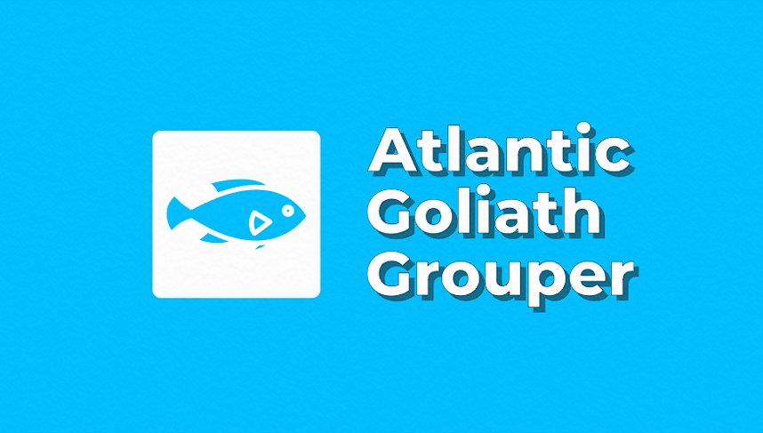

|  |
|
Goliath grouper is one of the biggest fishes in the seas, specifically in Atlantic Ocean. Its body has a robust and elongated appearance, which has its widest measurements accounting for more than half of total length. The broad head is home to small eyes and continuous dorsal fins consist of soft dorsal rays being much longer than first dorsal fin spines.
Atlantic Goliath Grouper is more or less brownish yellow, gray or olive and has small dark spots on its head, body and fins. Large adults have a somber color. Individuals that are less than three feet (1m) in length show three or four faint vertical stripes that are irregularly present on their sides.
Three to five tooth rows can be found in the lower jaw of the Goliath grouper. It can easily be distinguished from other North Atlantic groupers by its presence of weakly developed short canine teeth.
In the wilderness, anything can be perilous. If you leave groupers alone, they will not harm you. Handle big types with caution. According to scientists, grouper fishes are dangerous only when eaten. Giant Caribbean groupers also related to higher chances of ciguatera poisoning.
The Western Atlantic Ocean encompasses the goliath grouper, which inhabits the region from Florida all the way down south to Brazil, alongside the Gulf of Mexico and the Caribbean. Nonetheless, it can also be spotted in the Eastern Atlantic Ocean, specifically from Senegal to Congo, albeit its rarest state is in the Canary Islands.
They tend to prefer shallow waters, near the shore, as well as rocky or coral and muddy bottoms that are about 150ft (46m). This species also prefers mangrove swamps and estuaries where its bright colored larvae are often seen; particularly when they are near oyster beds. Goliath groupers stand out for being some of the rarest groupers in brackish waters.
The adults inhabit small territories. They are territorial near shelters like caves, wrecks and ledges, displaying an open mouth and quivering body towards intruders.
|
Goliath grouper mainly eat crabs and shrimps, in particular spiny lobsters. Additionally, they are known to eat fish including parrotfishes and stingrays, octopus, and young sea turtles. Their prey is ambushed with blinding quickness before it can escape; their jaws snap shut in a flash. These fish have sharp teeth meant for catching and holding onto their catch even as they do not chew them but swallow them whole. This larger than life fish is called an ambush predator. These fish ambush their prey by waiting patiently and then create a suction using their big mouths ingesting large amounts of rushing water that fish cannot escape from. |
Status: Vulnerable
Unfortunately, the Goliath grouper is particularly susceptible to over-exploitation because of its large body size, slow growth rate, low fecundity, and spawning behavior. The Goliath grouper is completely protected from fishing activities and recognized as a “Critically Endangered (Very Highly Vulnerable to Extinction)” species by the International Union for Conservation of Nature (IUCN).
Between the 1950s and the early 1990s, this species went through a severe decline over a two generation length time, in U.S. waters where its population was reduced to near extinction or by at least 84% .
Commercial catching of this species has been prohibited since 1990, and the population has been protected in the Caribbean since 1993, but it is mostly on the rise. However, its recovery is not yet complete.
Exploitation of the historical goliath grouper annual spawning aggregation sites substantially diminished the reproductive adult population.